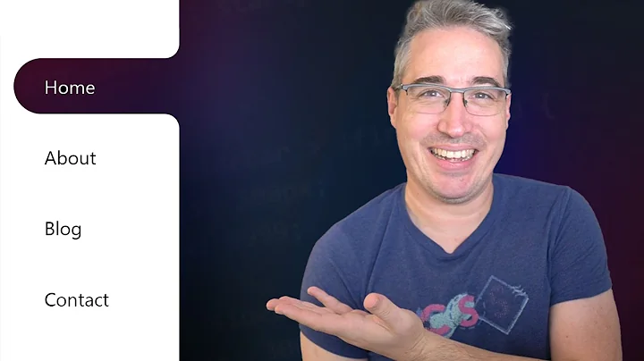
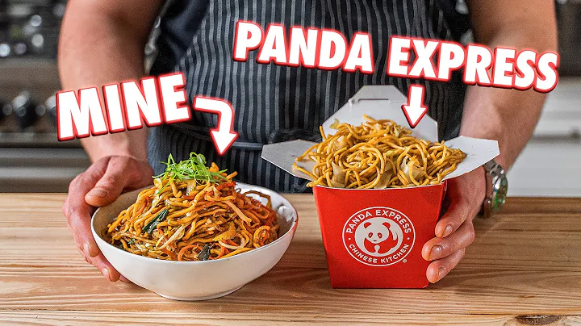
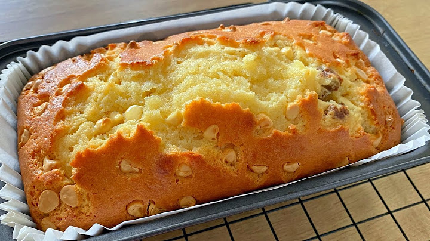
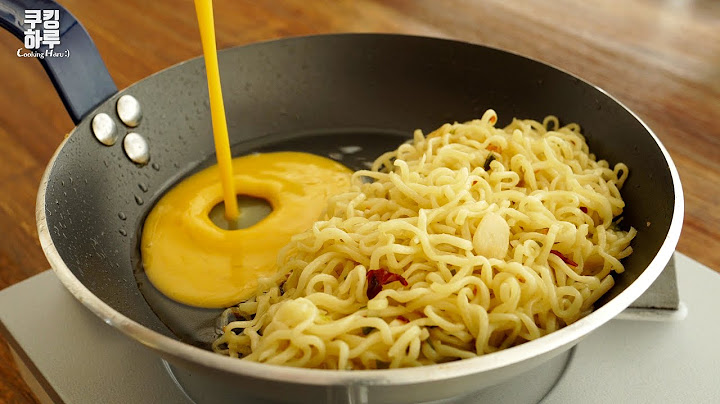

14:20

Bong Eats
1.57M subscribers
Jhal suji—savoury semolina with seasonal vegetables—Bengali tiffin or breakfast recipe
1.4M views · 4years ago

2:05:30

Kevin Powell
878K subscribers

5:00

Joshua Weissman
8.88M subscribers
45:32

KinoCheck.com
4.53M subscribers
1:20:30

OmniSTWO
11.4K subscribers
30:45

Web Dev Simplified
1.51M subscribers
1:20

Tanhir Paakshala
1.97M subscribers
9:00

Programming with Mosh
3.77M subscribers
2:55

আসুন দেখি রান্না শিখি
27.5K subscribers
মুচমুচে বেগুনি বানানোর রেসিপি - ভাজার পর ৩-৪ ঘন্টা মুচমুচে রাখার টিপস | beguni recipe | iftar recipe
1.6M views · 10 months ago

12:20

Easy Quick Recipes
49.1K subscribers
10:03

Lost and Rare Recipes
213K subscribers

5:35

쿠킹하루 Cooking Haru :)
2.99M subscribers